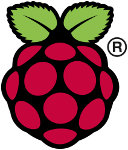

Raspberry Pi and Javascript Jam
October 5, 2015
Meetup -
GitHub
David Crook
Twitter: @idcrook
Github: @dpcrook
Blog: blog.crookster.org
Email: idcrook@idcrook.com
Hardware
“Those parts of the system that you can hit with a hammer are called hardware; those program instructions that you can only curse at are called software.”
Single Board Computers
| SBC | Price |
|---|---|
| Raspberry Pi Model B+ | $25 |
| Raspberry Pi 2 Model B | $35 |
| BeagleBone Black Rev C | $55 |
| Orange Pi PC | $15 |
Why Raspberry Pi exists
“The idea behind a tiny and affordable computer for kids came in 2006, when [the people behind the Pi] became concerned about the year-on-year decline in the numbers and skills levels of students entering Computer Science at University.”
Paraphrased from Raspberry Pi Foundation - About
Why is it called Raspberry Pi?
"[W]e wanted a fruit name for nostalgic reasons, and the Pi comes from Python" (the programming language) ~ Liz Upton
Raspberry Pi is a trademark of the Raspberry Pi Foundation
Pieces of Pi
- The Pi's in front of you are models Pi B+ or Pi 2 B.
- They have a 5W (5V @ 1A) external power supply
- Wired Ethernet networking and running Raspbian OS
- The 40-pin expansion header provides power pins and many kinds of I/O ports
- We are going to wire some of these pins up today to additional hardware
Pi Board
{kind=link}
Why node.js
- single-threaded, event-driven code
- resource usage is low
- fast, even on a tiny computer
- supported pretty well on Raspbian
- It's Javascript! And, well, you are at the Javascript meetup

DEMO Pt. 1
DEMO Pt. 2